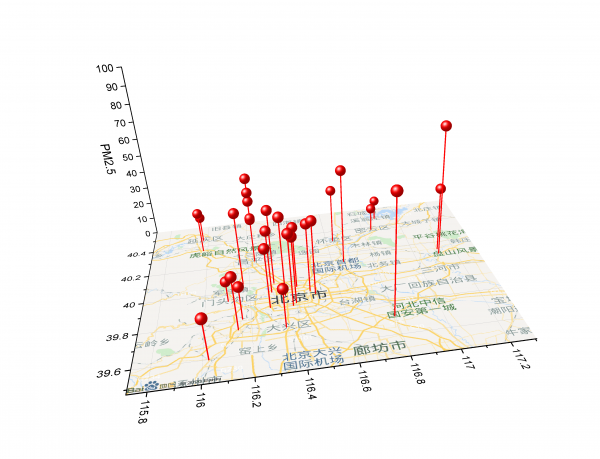
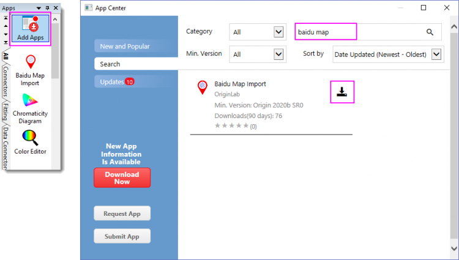
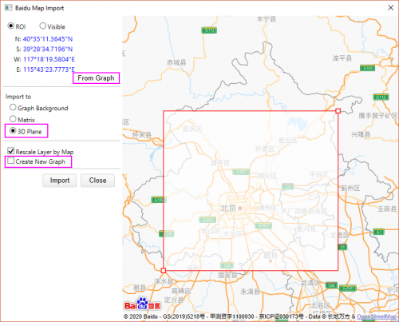
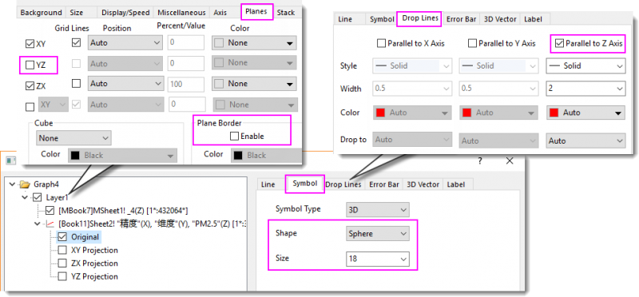

Baidu Map
Baidu-Map
Zusammenfassung
Dieses Tutorial zeigt Ihnen, wie Sie ein Diagramm mit Baidu Map als Hintergrund erstellen. Baidu Map wird empfohlen, wenn die gewünschte Hintergrundkarte sich innerhalb der Grenzen von China befindet.
- 
Was Sie lernen werden
Dieses Tutorial zeigt Ihnen, wie Sie:
- die App Baidu Map Import über das App Center herunterladen.
- die App verwenden, um Baidu Map zu einem 3D-Diagramm hinzuzufügen.
Schritte
- Öffnen Sie ein neues Projekt. Wählen Sie bei aktiver leerer Arbeitsmappe im Menü Daten: Mit Datei verbinden. Geben Sie im Dialog die folgende URL ein:
https://www.originlab.com/doc/Tutorials/Baidu-Map
Wählen Sie table/_1 zum Importieren der Daten von dieser Seite. Es gibt PM 2,5 Werte von mehreren Beobachtungspunkten in Beijing mittags am 11.18.2020.
- Wählen Sie den Header von Spalte C und klicken Sie auf X auf der angezeigten Minisymbolleiste. Dies setzt die Spalte B als X. Setzen Sie Spalte E entsprechend als Z.
- Markieren Sie Spalte D und wählen Sie im Menü Zeichnen: 3D: 3D-Punktdiagramm, um ein 3D-Punktdiagramm zu erstellen.

- Klicken Sie auf das Symbol Apps hinzufügen im Fenster Apps, das auf der rechten Seite des Origin-Arbeitsbereichs angesiedelt ist, und suchen Sie nach baidu map. Klicken Sie dann auf die Schaltfläche Download, um sie herunterzuladen.
- 
- Starten Sie bei aktivem 3D-Punktdiagramm die App Biadu Map Import. Klicken Sie zuerst auf die Schaltfläche From Graph, um das ROI-Feld neu zu positionieren und alle Beobachtungen im Vorschaufenster abzudecken. Ändern Sie den Map Type in 3D Plane. Deaktivieren Sie das Kontrollkästchen Create New Graph. Klicken Sie dann auf die Schaltfläche Import. Die Baidu Map wurde als Hintergrund in der XY-Ebene zum aktiven Diagramm hinzugefügt. Schließen Sie die App.
- 
- Passen Sie das Diagramm benutzerdefiniert an. Klicken Sie zum Öffnen des Dialogs Details Zeichnung doppelt auf das Symbol.
- Schalten Sie die Ankerlinien auf die XY-Ebene ein (Zeichnungsebene > Zweig Original > Registerkarte Ankerlinien).
- Ändern Sie die Symbolform in Kugel und vergrößern Sie auf Größe 18 (Zeichnungsebene > Zweig Original > Registerkarte Symbol).
- Verbergen Sie die YZ-Ebene und Ebenengrenze (Layerebene > Registerkarte Ebenen).
- 
- Passen Sie die Achsen benutzerdefiniert an. Löschen Sie den XY-Achsentitel. Wählen Sie im Menü Format: Achsen: Z-Achse. Ändern Sie auf der Registerkarte Skalierung des Dialogs Z-Achse die Skalierung Von 0 Bis 100.
- Verwenden Sie die Symbolleiste 3D-Drehung , um das Diagramm im gewünschten Winkel zu drehen.
Daten
-
| Beobachtung |
|
Längengrad |
Breitengrad |
PM2,5 |
| DongSi |
东四 |
116,23128 |
40,22077 |
42 |
| GuanYuan |
官园 |
116,35586 |
39,93239 |
45 |
| Olympic Sports Center |
奥体中心 |
116,41219 |
39,98538 |
35 |
| Agriculture Exhibition Center |
农展馆 |
116,46865 |
39,94429 |
39 |
| WanLiu |
万柳 |
116,29696 |
39,96706 |
36 |
| Northern XiQu |
北部新区 |
116,17035 |
40,04928 |
42 |
| FengTai Garden |
丰台花园 |
116,28371 |
39,86265 |
34 |
| YunGang |
云岗 |
116,162 |
39,81044 |
19 |
| GuCheng |
古城 |
116,23128 |
40,22077 |
37 |
| FangShan |
房山 |
116,14294 |
39,74788 |
30 |
| DaXing |
大兴 |
116,34159 |
39,72684 |
22 |
| YiZhuang |
亦庄 |
116,23128 |
40,22077 |
26 |
| GuYi |
顺义 |
116,65477 |
40,13012 |
54 |
| ChangPing |
昌平 |
116,23128 |
40,22077 |
50 |
| MenTouGou |
门头沟 |
116,10146 |
39,94048 |
12 |
| PingGu |
平谷 |
117,12141 |
40,14062 |
37 |
| HuaiRou |
怀柔 |
116,63177 |
40,316 |
32 |
| MiYun |
密云 |
116,84317 |
40,37625 |
14 |
| YanQing |
延庆 |
115,97503 |
40,45678 |
15 |
| DingLing |
定陵 |
116,23128 |
40,22077 |
27 |
| BaDaLing |
八达岭 |
115,9779 |
40,36214 |
24 |
| MinYun Reservoir |
密云水库 |
116,88429 |
40,47824 |
12 |
| DongGao |
东高村 |
117,11673 |
40,10479 |
73 |
| YongLeDian |
永乐店 |
116,79679 |
39,70886 |
66 |
| LiuLi River |
琉璃河 |
116,02432 |
39,59867 |
23 |
| YongDingMenNei |
永定门内 |
116,3993 |
39,87311 |
38 |
| NanSanHuan |
南三环 |
116,38432 |
39,85701 |
41 |
| DongSiHuan |
东四环 |
116,48972 |
39,91923 |
42 |